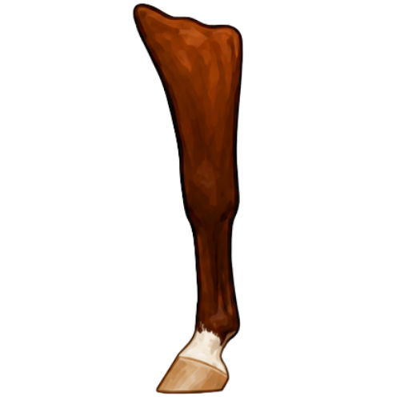

Front Leg
Knee
Cannon
Fetlock
Pastern
Coronet
Learn the parts of the horse's leg to connect each marking name to the part of the front leg it references.
Leg marking names are based on parts of the horse. Learn the areas around the hoof, pastern, fetlock, cannon, knee, and hock so marking descriptions make sense.

Terms like coronet, pastern, fetlock, sock, and stocking are easier to understand once learners can see where the hoof, coronet band, pastern, fetlock, cannon, knee, and hock sit on the leg.
The diagrams below show the key parts of the horse’s legs used when naming and describing leg markings.
Learn the parts of the horse's leg to connect each marking name to the part of the front leg it references.

Use these parts of the horse's leg to connect each marking name to the part of the hind leg it references.
The band at the top of the hoof. Very low white around this area is often described as a coronet marking.
The area between the hoof and fetlock. White that rises above the coronet through this area that doesn't reach onto the fetlock is called a pastern marking.
The joint above the pastern. White reaching this area may be described as a fetlock marking or a sock depending on how high up the leg it goes.
The long lower leg above the fetlock. Markings extending well up this area are usually described as socks or stockings, depending on height.
The major joint on the front leg. A high white marking that reaches at or above the knee is typically described as a high stocking.
The major joint on the hind leg. A high white marking that reaches at or above the hock is typically described as a high stocking.